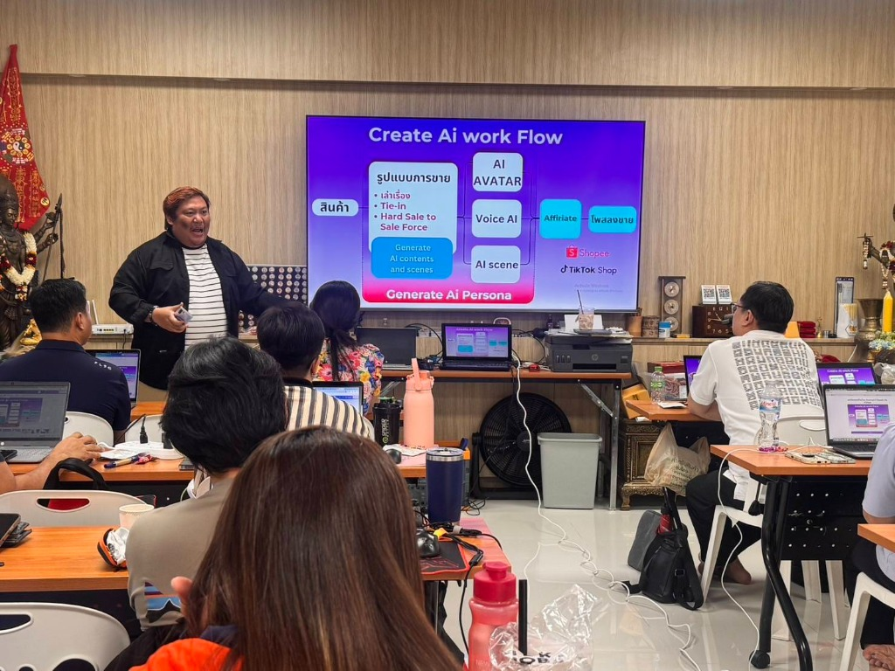
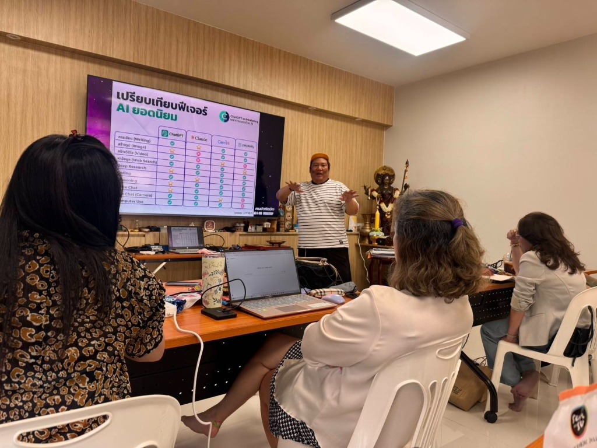
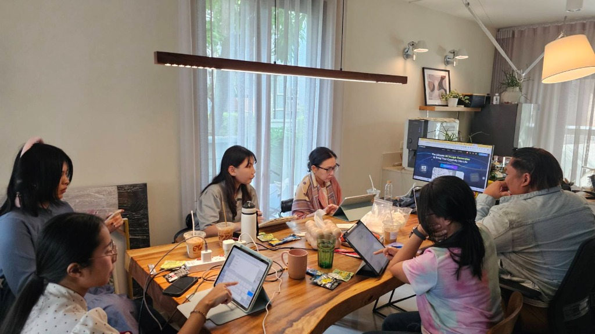

Corporate In-house Training
Corporate AI Transformation & Team Alignment
เวิร์กช็อปปรับ Mindset และยกระดับทักษะ AI ให้กับทีมงานทุกระดับ ตั้งแต่ผู้บริหารจนถึงระดับปฏิบัติการ สร้างความพร้อมและวิสัยทัศน์ร่วมกันในองค์กร
เราไม่ได้สอนแค่ให้ทีม “ใช้ AI เป็น” แต่ช่วยรื้อโจทย์ธุรกิจ เลือกเครื่องมือให้ถูกงาน และสร้าง Custom AI Workflow ที่นำกลับไปใช้งานและวัดผลลัพธ์ทางธุรกิจได้จริงในองค์กรคุณ
ภาพบรรยากาศเวิร์กช็อปและการให้คำปรึกษาจริง ที่ Saltcase เข้าไปร่วมเจาะลึกกระบวนการทำงาน เปรียบเทียบเครื่องมือ และสร้าง AI Copilot ร่วมกับทีมบริหารและพนักงานในองค์กร
เวิร์กช็อปปรับ Mindset และยกระดับทักษะ AI ให้กับทีมงานทุกระดับ ตั้งแต่ผู้บริหารจนถึงระดับปฏิบัติการ สร้างความพร้อมและวิสัยทัศน์ร่วมกันในองค์กร

สอนเจาะลึกกระบวนการสร้าง AI Persona, Content Generation, Video/Voice AI และการเชื่อมต่อสู่แพลตฟอร์ม E-commerce อย่าง Shopee & TikTok Shop

วิเคราะห์เปรียบเทียบจุดเด่น-จุดด้อยของ ChatGPT, Claude, Gemini, Perplexity และ Midjourney เพื่อให้ทีมเลือกใช้เครื่องมือได้ตรงกับงานและงบประมาณ

Session เวิร์กช็อปแบบประกบใกล้ชิด รื้อไฟล์งานจริง ออกแบบ Prompt ร่วมกัน และสร้าง Prototype ระบบงานที่นำไปใช้ได้ทันทีหลังจบการฝึกอบรม
เริ่มจากสิ่งที่ธุรกิจกำลังติดขัด แล้วค่อยออกแบบหลักสูตร Workflow และเครื่องมือให้เหมาะกับบริบทจริง ไม่ใช่การสอนฟีเจอร์สำเร็จรูปที่ทีมไม่รู้จะนำไปใช้ต่ออย่างไร
ต่างคนต่างลอง ไม่มีแนวทางความปลอดภัยที่ชัดเจน กลัวข้อมูลรั่วไหล และผลลัพธ์ไม่สม่ำเสมอ
เสียเวลาคัดลอกข้อมูล สรุปรายงาน และตรวจทานสัญญาด้วยมือซ้ำไปซ้ำมา
ใบเสร็จ ใบกำกับภาษี และเอกสารทางการเงินกระจายตัว ขาดระบบคัดแยกและตรวจสอบอัตโนมัติ
เสียเวลาร่าง Proposal และค้นหาข้อมูลลูกค้านานเกินไปจนพลาดโอกาสปิดการขาย
คิดไอเดียไม่ออก ใช้เวลาผลิตนาน และคอนเทนต์ไม่สร้างยอดขายหรือความน่าเชื่อถือ
ต้องการประเมินความคุ้มค่า (ROI), จัดลำดับความสำคัญของโปรเจกต์ และบริหารความเสี่ยง
Saltcase วางบริการเป็นเส้นทางต่อเนื่องที่เชื่อมโยงกันอย่างเป็นระบบ ตั้งแต่การเสริมทักษะทีม ไปจนถึงการสร้างความได้เปรียบทางธุรกิจและ Personal Authority
Training & Intensive Workshop ที่ทำให้ทีมเข้าใจและใช้ AI กับงานจริงได้ พร้อมชุด Prompt และ SOP ที่นำกลับไปใช้ได้ทันที
Workflow Architecture, Process Redesign, Document Intelligence และการเชื่อมต่อระบบ Automation ลดงานซ้ำซ้อน
Marketing Engine, Sales Pipeline Automation, Customer Experience และ Business Model Innovation ที่ขับเคลื่อนด้วย AI
เปลี่ยนความเชี่ยวชาญของผู้บริหารหรือผู้เชี่ยวชาญให้กลายเป็น Thought Leadership และ Digital Footprint ที่ค้นเจอและน่าเชื่อถือ
ทุกหลักสูตรและโปรเจกต์ของ Saltcase ขับเคลื่อนด้วยกรอบความคิด 6M™ เพื่อให้การ Customize เป็นระบบ มีหลักการ และวัดผลลัพธ์ได้อย่างแม่นยำ
เข้าใจศักยภาพ ขอบเขต ข้อจำกัด และสร้าง Human Judgment ให้ปลอดภัย
ถอด Current Workflow ระบุ Handoff, จุดคอขวด และเวลาที่สูญเสีย
เจาะลึกค้นหา Hidden Problem ที่ซ่อนอยู่ใต้ Brief หรืองานประจำวัน
เลือก Model, Data Pattern และ AI Tools ให้ตรงกับระดับความซับซ้อน
สร้าง Prompt Library, AI Assistant, Custom Workflow และ Prototype
วัดผลความเร็ว คุณภาพ ROI จัดทำ SOP และขยายผลทั่วทั้งองค์กร
15 Business Core + 7 Department & Transformation + 3 Executive Branding Courses ทุกหลักสูตรปรับแต่งเนื้อหาจากโครงสร้างเอกสาร คน และเป้าหมาย KPI จริงขององค์กร
เข้าใจความสามารถ ข้อจำกัด ความเสี่ยง และวิธีคิดแบบ Business-first
เลือก ChatGPT, Gemini, Claude, NotebookLM, Image/Video และ Automation ให้ตรงงาน
เปลี่ยน Prompt แบบลองผิดลองถูกให้เป็นคำสั่งที่ทำซ้ำและส่งต่อในทีมได้
Research ตลาด คู่แข่ง ประเด็นสำคัญ และสังเคราะห์เป็นข้อมูลเพื่อการตัดสินใจ
สร้างผู้ช่วยส่วนตัว/ทีมบน SOP และ Knowledge ที่เชื่อถือได้
Email, Meeting, Report, Proposal, Presentation และงานความรู้ประจำวัน
Map กระบวนการเดิม หา Friction และออกแบบ AI + Human Checkpoint
เชื่อม Forms, Sheets, Calendar, LINE, No-code และ AI เพื่อลดงานส่งต่อ
สรุป KPI วิเคราะห์ Insight และช่วยผู้บริหารอ่านข้อมูลได้เร็วขึ้น
OCR, Extract, Classify, Compare, Summarize และ Review งานเอกสาร
Audience, Positioning, Customer Journey, Campaign และ Message ที่มีหลักฐาน
Content Pillar, Idea, Script, Caption, Repurpose และ Production Workflow
Prospect research, qualification, meeting prep, proposal และ follow-up
FAQ, Knowledge Base, Response Standard, Chatbot/LINE และ Escalation
หา Business Model, New Service, Scenario และ AI-enabled revenue
Strategy, Decision Memo, Dashboard, Scenario Thinking และ Governance
OCR, Reconciliation support, Variance, Closing Checklist และ Reporting
JD, Recruitment, Onboarding, Policy Knowledge, Training และ Performance
Standardize Discovery, Account Research, Proposal, Objection และ Follow-up
Campaign Engine, Content System, PR และ Audience Intelligence
Supplier comparison, inventory insight, document workflow และ SOP
นำ 1 ปัญหาจริงขององค์กรมา Build Workflow หรือ Prototype ในห้องเรียน
Positioning, Expertise, Audience, Brand Story และ Brand Voice
เปลี่ยนความเชี่ยวชาญเป็น Content System ที่สร้าง Authority อย่างต่อเนื่อง
สร้าง Digital Footprint สำหรับผู้บริหาร/ผู้เชี่ยวชาญให้ค้นเจอและเชื่อถือได้
เรา Customize จากโครงสร้างธุรกิจจริง 6 มิติ เพื่อให้สิ่งที่เรียนในห้องกลายเป็นเครื่องมือที่ทีมใช้งานได้จริงทันทีหลังจบคลาส
Diagnostic คือเครื่องมือวิเคราะห์ระดับความพร้อม เพื่อไม่ให้องค์กรต้องจ่ายเงินซื้อคอร์สเกินความจำเป็น หรือเรียนเรื่องที่ยังไม่ใช่ Priority สูงสุด
ทีมงานเริ่มทดลองใช้ AI เช่น ChatGPT เป็นรายบุคคล แต่ยังไม่มีนโยบาย แนวทาง หรือมาตรฐานการใช้งานที่ปลอดภัย
แนะนำเริ่มจาก: AI Mindset & Foundation Course เพื่อสร้างความเข้าใจเรื่อง Data Privacy, Tool Selection และ Prompt Framework ที่มีมาตรฐาน
Saltcase เชื่อว่าลูกค้าต้องซื้อ “วิธีคิด” ก่อนซื้อบริการ เราจึงใช้ Content System เพื่อเปลี่ยนมุมมอง สร้างหลักฐาน (Evidence) และทำให้ความเชี่ยวชาญของผู้บริหารค้นเจอได้บนโลกดิจิทัล
เคสทุกชิ้นของ Saltcase ต้องพิสูจน์วิธีคิดและผลลัพธ์ทางธุรกิจที่ชัดเจน โดยไม่แต่งตัวเลข ROI ที่ยังไม่ได้วัดผลจริง
คำตอบสั้นๆ เกี่ยวกับ Saltcase หลักสูตร และวิธีการทำงาน
Saltcase คือสถาบันอบรมและที่ปรึกษาด้าน AI สำหรับองค์กร ที่ออกแบบหลักสูตรและ AI Workflow เฉพาะทางจากปัญหาจริงของธุรกิจแต่ละองค์กร แทนการสอนฟีเจอร์สำเร็จรูป ครอบคลุมตั้งแต่ Corporate Training, Workflow Consulting, Document Intelligence Automation ไปจนถึง Executive Personal Branding
Saltcase มีหลักสูตรทั้งหมด 25 คอร์ส แบ่งเป็น 5 กลุ่ม ได้แก่ Foundation, Productivity, Growth, Department (เฉพาะแผนก เช่น บัญชี การเงิน HR ขาย การตลาด) และ Authority (Personal Branding และ Thought Leadership สำหรับผู้บริหาร)
6M™ คือกรอบความคิดที่ Saltcase ใช้ขับเคลื่อนทุกหลักสูตรและโปรเจกต์ ประกอบด้วย 6 ขั้นตอน: Mindset, Map, Mine, Match, Make และ Multiply เพื่อให้การ Customize เป็นระบบ มีหลักการ และวัดผลลัพธ์ได้อย่างแม่นยำ
AI Business Diagnostic คือเครื่องมือประเมินความพร้อมด้าน AI ขององค์กรใน 6 มิติ และจัดระดับความพร้อมเป็น 5 ระดับ ตั้งแต่ Explore ไปจนถึง AI-Enabled Business เพื่อแนะนำจุดเริ่มต้นและหลักสูตรที่เหมาะสมที่สุด ก่อนที่องค์กรจะตัดสินใจซื้อคอร์สหรือบริการใดๆ
ได้ Saltcase ให้บริการอบรมแบบ In-house Corporate Training ที่ออกแบบเนื้อหาเฉพาะจากโครงสร้างธุรกิจ เอกสาร คน และเป้าหมาย KPI จริงขององค์กรนั้นๆ ตั้งแต่ทีมย่อยไม่กี่คนไปจนถึงทั้งองค์กรระดับ 100 คนขึ้นไป
Saltcase ออกแบบราคาตามขอบเขตงานเฉพาะขององค์กร เนื่องจากทุกหลักสูตรและ Workflow ถูก Customize ตามปัญหา จำนวนผู้เข้าอบรม และเป้าหมายจริง จึงไม่มีราคาตายตัว กรุณาติดต่อทีมที่ปรึกษาเพื่อ ขอใบเสนอราคา โดยไม่มีค่าใช้จ่ายในการประเมินเบื้องต้น
ติดต่อ Saltcase ได้ทางอีเมล mail.saltcase@gmail.com โทร 086-987-4656 หรือ LINE ID: Tubtimbiebers ทีมที่ปรึกษาให้บริการวันจันทร์ถึงศุกร์ เวลา 09:00-18:00 น.